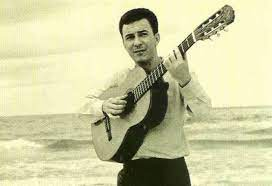
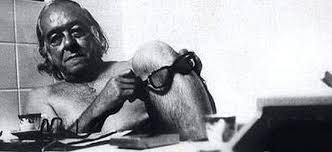

|  |
João Gilberto |
João Gilberto foi um cantor, violonista e compositor brasileiro. Considerado um artista genial por musicólogos e jornalistas especializados, revolucionou a música brasileira ao criar uma nova batida de violão para tocar samba: a "bossa nova". |
|
Antônio Carlos Jobim |
Mais conhecido pelo seu nome artístico, Tom Jobim, foi um compositor, maestro, pianista, cantor, arranjador e violonista brasileiro. É considerado o maior expoente de todos os tempos da música popular brasileira pela revista "Rolling Stone" e um dos criadores do movimento da bossa nova, com sua música e melodia, ao lado da letra e poesia de Vinicius de Moraes e da voz e violão de João Gilberto. |
|  |
Vinicius de Moraes |
"Vininha" foi um poeta, dramaturgo, jornalista, diplomata, cantor e compositor brasileiro. Poeta essencialmente lírico, o que lhe renderia o apelido "Poetinha", que lhe teria atribuído Tom Jobim, notabilizou-se pelos seus sonetos. Conhecido como um boêmio inveterado, fumante e apreciador do uísque, era também conhecido por ser um grande conquistador. |
 |
Toquinho |
O apelido Toquinho foi dado por sua mãe e já aos quatorze anos ele começou a ter aulas de violão com Paulinho Nogueira. Estudou harmonia com Edgar Janulo, violão clássico com Isaías Sávio, orquestração com Leo Peracchi e Oscar Castro-Neves. Em 1970 compôs, com Jorge Ben Jor, seu primeiro grande sucesso, Que Maravilha. Ainda nesse ano, Vinicius de Moraes o convidou para participar de espetáculos em Buenos Aires, formando uma sólida parceria que durou onze anos (e encerrou-se com a morte de Vinicius de Moraes), 120 canções, 25 discos e mais de mil espetáculos. |